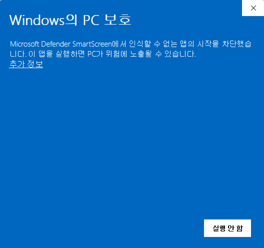
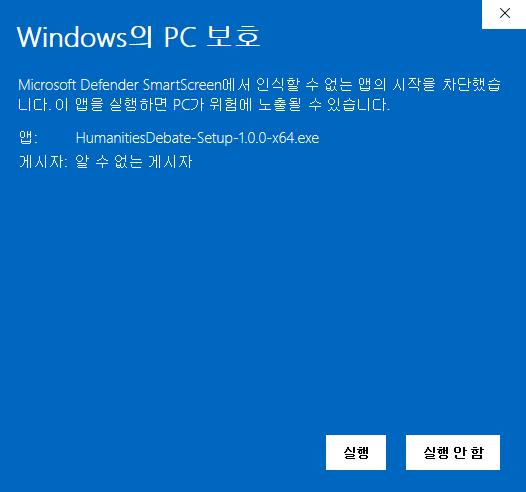

처음 설치하는 분을 위한 안내
설치 및 사용 방법
파일 확인부터 첫 토론까지, 아래 순서대로 따라 해보세요.
실제 화면은 Windows와 Chrome 버전에 따라 다를 수 있습니다.
다운로드 전 확인해주세요
- Windows x64 PC
- Google Chrome 정식 버전
- 본인 ChatGPT Plus/Pro 구독
- 인터넷 연결 및 마이크 사용 권한
프로그램 이용료는 무료입니다. 개인 ChatGPT 계정의 이용 한도가 적용되며 Plus/Pro도 사용량 제한이 있습니다. 무료·Go 계정은 지원 미검증입니다.
본인 계정으로 공식 OpenAI 로그인 화면에서 직접 인증합니다. 개발자에게 ChatGPT 비밀번호를 전달할 필요가 없습니다.
설치 전 보안 확인: 디지털 서명이 없어 ‘Windows의 PC 보호’ 경고가 나올 수 있습니다. 공식 GitHub Release의 파일인지 확인하고, 파일 이름·SHA-256을 비교한 뒤 신뢰할 때만 실행하세요. Defender가 위협을 탐지하면 실행하지 마세요. 실제 경고 화면·파일 확인 방법
Windows x64 전용 · macOS·모바일 미지원 · 무료 개인·비상업용
Windows 설치 파일 다운로드
이 홈페이지의 확인된 공식 다운로드 링크에서 Windows x64용 설치 파일을 받습니다. 파일을 저장할 위치를 물으면 ‘다운로드’ 폴더를 선택하세요.
현재는 v1.0.0 정식 배포판 안내입니다. 페이지 상단의 공식 다운로드 버튼에서 받을 수 있습니다. 검색 광고나 출처를 모르는 재배포 링크에서 받지 마세요.
페이지 상단에서 필수 조건을 확인하고 다운로드할 수 있습니다.
- 파일 이름
HumanitiesDebate-Setup-1.0.0-x64.exe- 파일 크기
- 약 121.6 MB / 116 MiB · 121,625,260바이트
- 디지털 서명
- 없음 · 개인 개발 프로그램
앱 독립 코드는 MIT, 포함된 SIWC DevKit과 수정 모듈은 별도 비상업 조건입니다. 라이선스 적용 범위를 확인하세요.
설치 파일이 절대적으로 안전하거나 모든 PC에서 작동한다고 보장하지 않습니다. 실행 전 3단계의 파일 확인을 진행하세요.
Google Chrome 정식 버전 확인
Windows 시작 메뉴에서 Google Chrome을 검색해 실행해 보세요. Edge나 Chromium 대신 Google이 배포하는 정식 Chrome을 사용합니다.
없다면 Google 공식 Chrome 다운로드 (새 창)에서 설치하세요. 이미 있다면 Chrome 메뉴의 ‘도움말 → Chrome 정보’에서 업데이트를 확인합니다.
Chrome 베타·개발자 버전만 설치한 환경은 정상 동작을 보장하지 않습니다. Google Chrome 정식 버전을 준비해주세요.
인터넷 연결이 필요합니다. 토론 앱 사용을 위해 VS Code, Node.js나 개발용 터미널을 따로 설치할 필요는 없습니다.
Windows 보안 경고와 파일 확인
현재 설치 파일은 디지털 서명이 없어 SmartScreen에서 ‘Windows의 PC 보호’ 같은 경고를 표시할 수 있습니다. 경고만으로 악성코드라고 단정할 수는 없으며, 안전하다는 뜻도 아닙니다. 경고를 무조건 무시하거나 보안 기능을 끄지 마세요.
- 출처 확인. 이 홈페이지가 연결한 공식 GitHub Release에서 받은 파일인지 확인하세요. 파일 이름이 같다는 이유만으로 믿지 마세요.
- 파일 이름·게시자 확인. 탐색기에서 위 파일 이름과
.exe확장자를 비교하세요. 경고의 게시자도 확인하세요. 현재 무서명판은 ‘알 수 없는 게시자’로 나올 수 있으며, 이것은 신뢰를 증명하지 않습니다. 다른 이름이나 예상하지 못한 게시자가 보이면 실행을 멈추세요. - SHA-256 비교. 아래 방법으로 파일이 이 안내의 설치 파일과 같은지 확인하세요. 한 글자라도 다르면 실행하지 마세요.
- Microsoft Defender 검사. 설치 파일을 마우스 오른쪽으로 클릭하고 ‘추가 옵션 표시 → Microsoft Defender로 검사’를 선택하세요. 위협이 발견되면 실행하지 마세요.
SHA-256 해시 비교 방법 · 처음이라면 펼쳐 보세요
해시는 파일 내용을 나타내는 64자리 값입니다. 이 단계에서만 파일 확인을 위해 Windows에 기본으로 있는 PowerShell을 사용합니다.
- Windows 시작 메뉴에서 ‘Windows PowerShell’을 검색해 여세요. 관리자 권한은 필요 없습니다.
- 설치 파일이 ‘다운로드’ 폴더에 있다면 아래 명령을 복사해 붙여넣고 Enter를 누르세요. 파일을 실행하거나 변경하지 않고 확인만 합니다.
Get-FileHash -Algorithm SHA256 -LiteralPath "$env:USERPROFILE\Downloads\HumanitiesDebate-Setup-1.0.0-x64.exe" | Format-List다른 폴더에 받았다면 탐색기에서 파일을 Shift + 오른쪽 클릭해 ‘경로로 복사’를 선택하세요. 명령의 큰따옴표 안 경로를 그 파일의 전체 경로로 바꾸세요. 따옴표가 두 겹으로 들어가지 않게 확인합니다.
출력에서 ‘Hash’ 옆의 값을 아래 값과 처음부터 끝까지 비교합니다. 영문 대문자·소문자는 달라도 됩니다. 오류가 나오면 파일 위치와 이름부터 다시 확인하세요.
v1.0.0 설치 파일의 SHA-256be453654462e1e94f86e7cfd5bc177ef05324c923fc4a59a4dd6299e011ae0f0이 값은 위 파일 하나에만 해당합니다. 버전이나 파일이 바뀌면 새 해시가 필요합니다. 해시 일치는 파일의 동일성을 확인할 뿐, 안전성을 보장하지 않습니다. 비교할 값의 출처도 신뢰할 수 있어야 합니다.
Defender 메뉴가 없다면 ‘Windows 보안 → 바이러스 및 위협 방지 → 검사 옵션 → 사용자 지정 검사’에서 다운로드 폴더를 검사하세요. 다른 백신을 사용하는 PC는 해당 제품의 검사 기능을 확인하세요.
‘Windows의 PC 보호’ 경고가 나타났다면
- 경고 내용을 읽고 ‘추가 정보’를 찾으세요. 이 화면은 Windows가 알려지지 않은 앱의 실행을 막고 확인을 요청하는 화면입니다. ‘추가 정보’는 보통 경고 설명문 바로 아래 왼쪽에 있는 작은 글자 링크입니다. 이 링크를 누르면 앱 정보를 펼쳐 볼 수 있으며, 바로 설치되는 것은 아닙니다.
- 펼쳐진 화면에서 앱 이름과 게시자를 확인하세요. ‘앱’ 항목을 내려받은 파일 이름
HumanitiesDebate-Setup-1.0.0-x64.exe와 비교하세요. 현재 무서명판의 게시자는 ‘알 수 없는 게시자’로 표시될 수 있습니다. 이는 안전하다는 뜻이 아닙니다. - 확인을 마치고 신뢰하는 경우에만 ‘실행’을 선택하세요. 공식 출처, SHA-256 일치, Defender 검사 결과를 모두 확인한 뒤에도 설치 여부는 본인이 결정합니다. 신뢰할 수 없다면 ‘실행 안 함’을 선택하고 창을 닫으세요.
아래는 사용자가 제공한 실제 Windows 경고 화면입니다. Windows 버전과 보안 정책에 따라 문구·위치·버튼이 다를 수 있습니다.
경고가 나타나지 않으면 위 파일 확인을 마친 뒤 4단계의 일반 설치를 진행하세요. 경고가 없다는 것만으로 안전성이 보장되지는 않습니다.
경고가 이 안내와 다르거나 위협이 탐지되면 실행을 중단하세요. 출처가 불분명하거나 앱 이름·게시자가 예상과 다르거나 해시가 일치하지 않아도 중단합니다. ‘실행’ 버튼이 없거나 조직 정책으로 차단된 경우 보안 설정을 끄거나 우회하지 말고 관리자에게 문의하세요.
Microsoft SmartScreen 경고 안내 (새 창) · 해시 확인 (새 창) · Defender 검사 (새 창)

3-1 · 추가 정보를 누르기 전 화면
추가 정보를 누르세요.
3-2 · 앱 정보 확인 후 실행 버튼이 나타난 화면
앱 이름을 확인한 뒤 신뢰할 때만 실행을 누르세요.설치 프로그램 실행
파일 확인을 마쳤고 설치하기로 결정했다면 설치 파일을 두 번 클릭하세요. 설치 화면에서 위치를 확인하고 ‘설치’를 누른 뒤 완료될 때까지 기다립니다.
기본 설치 폴더를 권장합니다. 기존 버전이나 개인 문서가 들어 있는 폴더를 설치 위치로 선택하지 마세요. 실행 중인 구버전 앱은 먼저 종료합니다.
설치 후 시작 메뉴 또는 바탕화면의 ‘Humanities Debate’ 아이콘을 실행하세요. Chrome 앱 창과 로컬 서버가 자동으로 시작됩니다.
자동 업데이트는 지원하지 않습니다. 새 버전은 공식 Release에서 직접 확인하며, 업데이트 전에 기록을 백업하세요. 설치 중 예상하지 못한 추가 프로그램이나 결제를 요구하면 중단하세요.
내 ChatGPT 계정으로 연결
처음 실행하면 Continue with ChatGPT를 누르세요. 열린 공식 OpenAI 로그인 화면에서 본인의 계정과 작업공간을 선택하고 앱의 구독 사용 동의를 읽습니다.
주소가 공식 OpenAI 인증 사이트(
https://auth.openai.com)인지 확인한 뒤 로그인하세요. 동의하고 연결이 완료되면 토론 시작 화면으로 자동 이동합니다. 이미 연결된 계정은 다음 실행 때 바로 열립니다.앱은 이용 자격이 있는 본인 ChatGPT Plus/Pro 구독과 동의를 바탕으로 본인 계정의 허용 사용량으로 AI를 요청합니다. 별도의 API 키를 입력할 필요는 없습니다. 무료·Go 계정은 지원 미검증이며, Plus/Pro도 계정·구독·작업공간의 사용량 제한이 적용됩니다.
비밀번호나 인증 토큰을 개발자·다른 사용자에게 보내지 마세요. 로그인 화면과 계정 정보가 보이는 화면 캡처도 공유하지 마세요.
Windows와 Chrome 마이크 허용
- 마이크 연결. 헤드셋이나 마이크를 연결하고 물리적인 음소거 스위치를 확인하세요. ‘Windows 설정 → 시스템 → 소리 → 입력’에서 선택한 마이크의 입력이 움직이는지 확인합니다.
- Windows 허용. Windows 11의 ‘설정 → 개인 정보 및 보안 → 마이크’에서 ‘마이크 액세스’, ‘앱에서 마이크에 액세스하도록 허용’, ‘데스크톱 앱에서 마이크에 액세스하도록 허용’을 확인하세요. Windows 10에서는 ‘설정 → 개인 정보 → 마이크’에 있습니다.
- Chrome 허용. 토론을 시작하고 ‘말하기 (마이크)’를 누르세요. Chrome이 마이크 사용을 물으면 이 앱의 요청인지 확인하고 허용합니다.
이 앱은 전용 Chrome 프로필을 사용합니다. 일반 Chrome에서 허용했어도 이 앱에서는 다시 허용해야 할 수 있습니다. 차단했다면 마이크 문제 해결을 확인하세요.
Chrome 음성 인식은 온라인 음성 서비스로 오디오를 보낼 수 있습니다. PC 안에서만 처리되는 방식은 아닙니다. 원치 않으면 ‘텍스트 직접 입력’을 선택하세요. 앱은 별도 녹음 파일을 저장하지 않습니다.
주제를 고르고 토론 시작
주제를 ‘랜덤’, ‘목록에서 선택’, ‘직접 입력’ 중에서 정하세요. 상황 설명과 핵심 쟁점이 있다면 읽고, ‘일반 토론’ 또는 ‘심화 토론’을 선택한 뒤 ‘시작’을 누릅니다.
김지훈·이서연·박민수 세 AI가 자동으로 의견을 주고받습니다. 자신의 차례를 기다릴 필요 없이 ‘말하기 (마이크)’를 누르면 AI의 예정 발언을 취소하고 내 발언을 시작합니다.
말한 뒤 ‘발언 종료’를 눌러 마지막 인식 결과를 기다리세요. 바로 제출하는 흐름에서는 최종 결과 확인 후 발언이 전달됩니다. 먼저 내용을 고치려면 입력 영역의 ‘멈추고 수정’을 사용하고, 확인한 뒤 ‘발언 완료’를 누르세요. 텍스트 직접 입력도 가능합니다.
일반 모드는 참가자별 최근 발언을 남기고, 실전 모드는 이전 발언을 가립니다. 두 모드 모두 확정 기록은 보존합니다. 잠시 쉬려면 ‘일시정지’를 누르세요.
실제 AI 토론에는 주제와 대화 내용이 OpenAI로 전달됩니다. 회사 기밀, 비밀번호, 다른 사람의 개인정보는 말하거나 입력하지 마세요.
토론 기록과 피드백 확인
‘토론 종료’를 누르면 결과 화면에서 전체 발언을 시간순으로 볼 수 있습니다. 저장 상태를 확인하세요. 진행 중인 토론은 새로고침하거나 창을 닫기 전에 종료·저장해야 합니다.
‘일반 분석’ 또는 ‘심층 분석’을 선택하고 ‘AI 피드백 분석하기’를 누르면 100점 만점 평가와 실제 발언을 바탕으로 한 개선 예시를 확인할 수 있습니다. 비공식 연습용 평가이며 실제 채용 결과를 예측하지 않습니다.
다시 실행한 뒤 같은 연결 계정으로 ‘과거 기록’을 열면 저장된 토론과 피드백을 읽을 수 있습니다. 저장된 결과를 읽는 것은 AI를 다시 호출하지 않습니다. 새 분석이나 재분석은 계정 사용량을 소모합니다.
‘설정 → 토론 기록 백업·복원’에서 필요한 기록을 별도 파일로 보관하세요. 백업에는 개인 발언이 들어 있으므로 공개 게시판이나 개발자에게 그대로 보내지 마세요.
막히는 부분이 있나요?
문제 해결 FAQ
Chrome을 찾을 수 없다고 나와요.
Google 공식 사이트 (새 창)에서 정식 Chrome을 설치하고 한 번 실행한 뒤 앱을 다시 여세요. 베타·개발자 버전만 설치한 환경은 정상 동작을 보장하지 않습니다. Edge나 포터블 Chromium은 대신 사용할 수 없습니다. 학교·회사 PC에서 설치가 막혔다면 관리자에게 문의하세요.
마이크가 인식되지 않거나 음성이 글자로 나오지 않아요.
먼저 Windows ‘소리 → 입력’에서 마이크 입력이 감지되는지 확인하세요. 입력이 없으면 연결·음소거·입력 장치를 점검합니다. 입력은 되는데 글자로 나오지 않으면 6단계의 두 권한과 인터넷 연결을 확인하세요.
앱 창의 Chrome 메뉴에서 ‘설정 → 개인 정보 보호 및 보안 → 사이트 설정 → 마이크’를 열어 이 앱의 로컬 주소가 차단되어 있지 않은지 확인하세요. 일반 Chrome 창이 아닌 앱의 전용 Chrome 프로필에서 확인해야 합니다.
‘마이크 다시 켜기’로 수동 복구할 수 있습니다. 계속 실패하면 ‘텍스트 직접 입력’을 사용하세요. 음성 인식은 브라우저 서비스 장애나 네트워크에 영향을 받을 수 있으며, 재시도로 반드시 해결되지는 않습니다. 확정된 문장이나 기록을 삭제하며 복구하지 마세요.
ChatGPT 로그인이 되지 않아요.
AI 토론·피드백에는 본인 ChatGPT Plus/Pro 구독이 필요합니다. 무료·Go 계정은 지원 미검증이며, Plus/Pro도 무제한 이용은 아닙니다.
인터넷과 PC 날짜·시간을 확인하고, 공식 OpenAI 인증 페이지에서 본인 계정·작업공간 및 구독 사용 동의를 확인하세요. 앱의 ‘설정 → 연결 오류 복구’에서 다시 시도할 수 있습니다. 인증이 만료되었다는 안내가 나오면 공식 로그인으로 다시 연결하세요.
이용 자격이나 작업공간 정책으로 거부된 경우 로그인을 반복해도 해결되지 않을 수 있습니다. 다른 계정으로 연결하려면 ‘설정 → 다른 계정 추가’를 사용하세요. 비밀번호·토큰·인증 폴더를 전달하거나 직접 편집하지 마세요.
ChatGPT 사용량 제한이 발생했어요.
AI 요청을 멈추고 ‘설정 → ChatGPT 사용량 관리’에서 해당 앱과 계정의 사용량·제한을 확인하세요. 계정 전체 또는 앱에 설정된 한도일 수 있습니다. 정확한 재개 시점은 공식 사용량 화면의 안내를 따르세요.
이 앱만의 별도 무제한 사용량은 아닙니다. 반복 클릭으로 제한을 우회하지 마세요. 저장된 기록과 피드백은 추가 AI 호출 없이 읽을 수 있습니다. 새 연습 때 일반 토론·일반 분석을 선택하면 불필요한 고성능 설정 사용을 줄일 수 있지만, 절약 비율을 보장하지는 않습니다.
토론 기록은 어디에 저장되나요?
이 PC의 Windows 사용자별 앱 데이터 안에 있는 전용 Chrome 프로필에 저장됩니다. 같은 프로필에서도 연결된 ChatGPT 계정·등록별로 구분하며, 일반 Chrome의 기록이나 다른 PC와 자동 동기화되지 않습니다.
설치판의 기본 데이터 위치는 %APPDATA%\HumanitiesDebateSIWC\profiles 아래입니다. 폴더 전체를 옮기거나 삭제하지 말고 ‘설정 → 토론 기록 백업·복원’으로 본인 기록만 내보내세요. 인증정보가 들어 있는 데이터 폴더를 다른 사람에게 보내지 마세요.
로컬 기록은 저장될 뿐 모두 암호화되는 것은 아닙니다. 같은 Windows 계정을 여러 사람이 공유하면 완전한 보호 경계가 되지 않으므로 개인 Windows 계정과 PC 잠금을 사용하세요.
프로그램을 종료하거나 제거하려면 어떻게 하나요?
진행 중인 토론을 종료·저장한 뒤 Chrome 앱 메인 창의 X 또는 ‘설정 → 프로그램 완전 종료’를 사용하세요. 설정 패널의 ‘닫기’는 프로그램 종료가 아닙니다.
제거 전 필요한 기록을 백업하세요. 계정 연결도 해제하려면 앱 설정에서 먼저 로그아웃하고, 원격 해제에 실패했다는 안내가 나오면 ChatGPT의 연결·사용량 관리에서도 확인하세요.
Windows 11에서는 ‘설정 → 앱 → 설치된 앱’에서 ‘Humanities Debate’을 찾아 ‘제거’를 선택합니다. Windows 10에서는 ‘앱 및 기능’에 있습니다. 현재 설치판은 제거해도 토론 기록을 자동 삭제하지 않습니다. 프로그램 제거와 계정 연결 해제는 별개입니다.